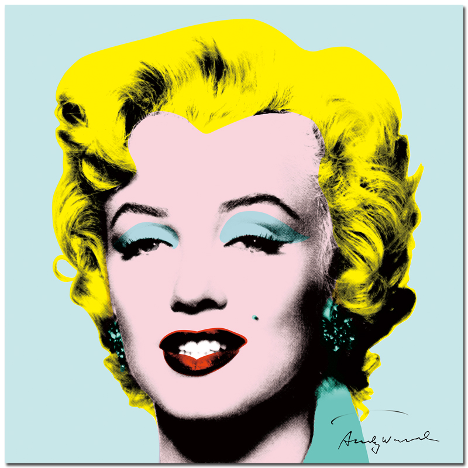
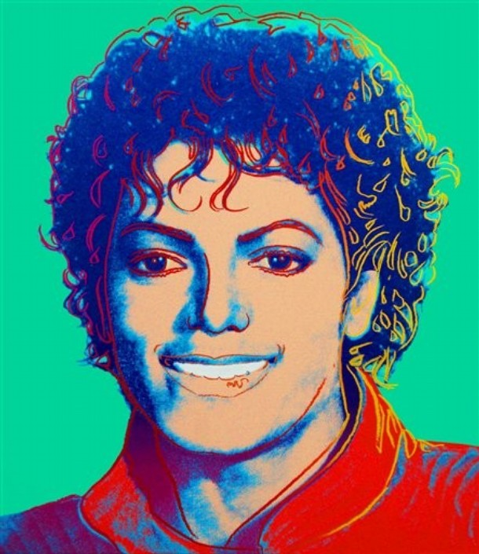
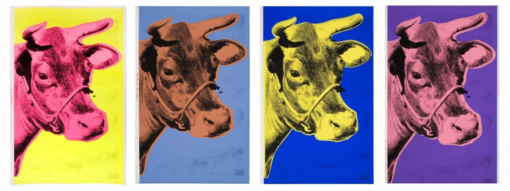

Andy Warhol's most notable style photographic silkscreen printing allowed him to easily reproduce images that he appropriated from popular culture. Among his first photographic silkscreen works are the paintings of Marilyn Monroe.

This Andy Warhol portrait brings together the uncontested King of Pop Art with the uncontested King of Pop. Warhol’s life was devoted to fame. Jackson, on the other hand, was a kid who was famous from an early age and was a man who spent years trying to avoid the fame he was handed.
Art and Archives
Warhol's art spans a variety of media, including painting, silkscreening, photography, film, and sculpture. Many of his creations are very collectible and highly valuable and his works include some of the most expensive paintings ever sold.

Some of his notable work